1 Membuat sebuah tabel
Pada FrontPage XP ada tiga metode yang dapat digunakan untuk membuat tabel.
Masing-masing memiliki kelebihan dan kekurangannya sendiri.
Untuk membuat tabel, ketiga metode menggunakan langkah awal yang sama, yaitu
klik lokasi penempatan tabel di dalam dokumen.
Kemudian gunakan salah satu dari tiga cara berikut ini.
1.1 Cara pertama membuat tabel
1. Tampilkan toolbar Tables dengan mengaktifkan View _ Toolbars _ Tables
atau klik kanan bar lalu klik Tables. Gambar 9.3 menampilkan toolbar Tables.
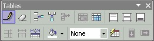
Gambar 9.3 Toolbar Tables
2. Klik tombol Draw Table (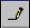 ), kemudian klik pada halaman, titik awal tabel,
lalu geser ke arah kanan bawah. FrontPage XP akan menampilkan bentuk tabel
sebagai garis putus-putus yang merupakan garis bimbingan. Gambar 9.4 kiri.
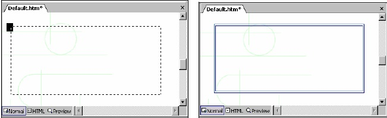
Gambar 9.4 Garis bimbingan dan hasilnya
3. Setelah mencapai ukuran yang diinginkan lepaskan tombol mouse, maka
terbentuklah bangun persegi panjang. Gambar 9.4 kanan.
4. Untuk menambahkan kolom dan baris, gunakan tombol Draw Table.FrontPage
XP tidak menampilkan bentuk kotak melainkan hanya garis yang akan menjadi
garis batas kolom ataupun baris. Caranya, klik titik awal lalu geser ke arah titik
akhir, untuk membuat garis kolom berarti arah pergeseran adalah vertikal, yaitu
dari atas ke bawah atau sebaliknya. Sedangkan untuk membuat garis baris, arah
pergeserannya horizontal, yaitu dari kiri ke kanan atau sebaliknya. Gambar 9.5
menunjukkan hasil pembuatan garis kolom.
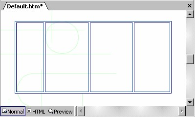
Gambar 9.5 Pembuatan garis kolom
5. Gambar 9.6 menunjukkan hasil akhir, setelah penggambaran garis kolom dan
garis baris sekaligus.
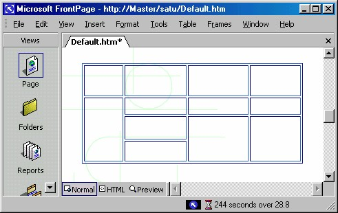
Gambar 9.6 Hasil Penggambaran Tabel
6. Untuk menghapus garis yang telah kita pasangkan, gunakan tombol Eraser (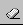 ).
Dengan cara drag untuk membentuk bidang yang melingkupi garis yang akan
kita hapus. Setelah garis tersebut berubah warna, lepaskan drag, maka garis akan
terhapus.
7. Untuk menyelesaikan penggambaran tabel, klik di area manapun di luar tabel.
Atau tekan ESC, bentuk pointer mouse akan kembali ke bentuk semula.
1.2 Cara kedua membuat tabel
Untuk membuat tabel, selain menggambar langsung pada halaman, kita bisa
menggunakan tombol Insert Table .
1. Klik tombol Insert table pada toolbar Standard, muncul pilihan jumlah kolom
dan baris.
2. Lalu drag pointer mouse untuk memilih sejumlah kolom dan baris yang Anda
inginkan (lihat Gambar 9.7). Drag yang Anda lakukan akan menentukan ukuran
baris dikali kolom, area yang terpilih akan berwarna gelap dan angkanya
ditampilkan pada baris paling bawah
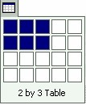
Gambar 9.7 Drag pointer mouse untuk membuat tabel
3. Setelah mendapatkan ukuran yang Anda inginkan, lepaskan drag. Misalnya
Anda memilih 2x3, hasilnya akan seperti Gambar 9.8.
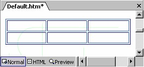
Gambar 9.8 Tabel 2X3
1.3 Cara ketiga membuat tabel
Metode ketiga adalah menggunakan kotak dialog, dengan langkah:
1. Aktifkan Table _ Insert Table . Kotak dialog Insert Table akan terbuka
(Gambar 9.9)
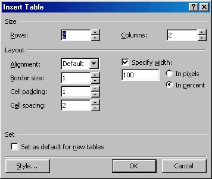
Gambar 9.9 Kotak dialog Insert Table
2. Isikan jumlah baris (Rows ) dan kolom (Columns).
3. Lalu tentukan pilihan Anda pada item-item berikut ini:
• Alignment, adalah pilihan penjajaran tabel dengan nilai Default, Left, Right
dan Center.
• Border size, untuk menentukan angka ketebalan garis. Angka 0 berarti tidak
muncul garis. Ukuran 0 inilah yang akan digunakan sebagai sarana tata letak
(lay out).
• Cell padding, untuk menentukan ruang antara isi sel dan garis batas sel.
Ruang ini berada di sekeliling bagian dalam sebuah sel.
• Cell spacing, untuk menentukan ruang antar sel.
• Specify width, untuk menentukan lebar tabel. Lalu tentukan apakah dalam
satuan piksel (pilihan In pixels ) atau sebagai persentase ukuran tabel (In
percent).
Misalnya kita isikan data sebagai berikut:
• Rows = 2
• Columns = 2
• Border size = 2
• Cell padding = 2
• Cell spacing = 2
4. Kemudian klik OK. Hasilnya seperti Gambar 9.10
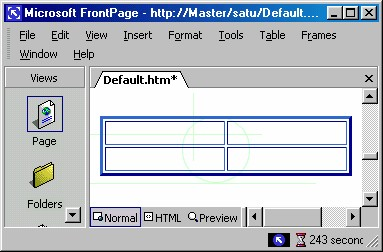
Gambar 9.10 Hasil pemasangan tabel
Kalau Anda agak bingung tentang pengertian Cell Padding dan Cell Spacing,
perhatikan Gambar 9.11.
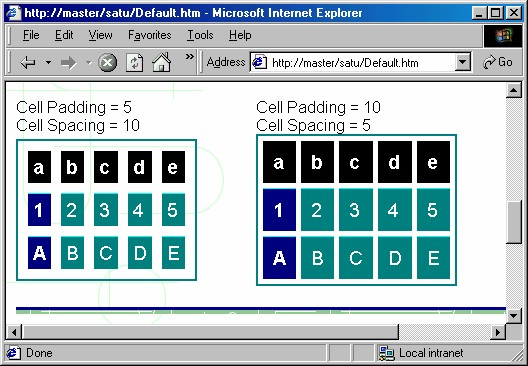
Gambar 9.11 Pemakaian Cell Padding dan Cell Spacing
Gambar sebelah kiri adalah tabel dengan Cell Padding = 5 dan Cell Spacing = 10.
Sedangkan gambar sebelah kanan adalah tabel dengan Cell Padding = 10 dan Cell
Spacing = 5.
Copyright © Herlan Lesmana
Created with the Freeware Edition of HelpNDoc: Free PDF documentation generator